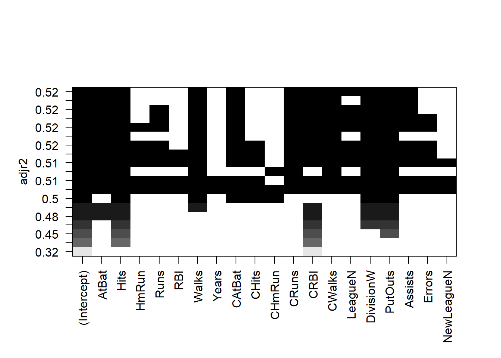

library(ISLR2)
dim(Hitters)[1] 322 20sum(is.na(Hitters$Salary))[1] 59Hitters <- na.omit(Hitters)
dim(Hitters)[1] 263 20sum(is.na(Hitters))[1] 0| Tipo | |
|---|---|
| Slides: | https://hastie.su.domains/ISLR2/Slides/Ch6_Model_Selection.pdf |
| Lab-html: | https://hastie.su.domains/ISLR2/Labs/Rmarkdown_Notebooks/Ch6-varselect-lab.html |
| Lab-Rscript: | https://hastie.su.domains/ISLR2/Labs/R_Labs/Ch6-varselect-lab.R |
| Data: | Hitters (ISLR2) |
Aplicamos el enfoque de selección del mejor subconjunto (de variables) a los datos de Hitters.
Nos interesa predecir el Salary de un jugador de béisbol sobre la base de varias estadísticas asociadas con el rendimiento del año anterior.
NA valores faltantesEn primer lugar, notamos que falta la variable Salary para algunos de los jugadores, contiene NAs. Con la función na.omit() se eliminan las filas que tienen valores faltantes en cualquier variable del conjunto de datos (véase el anexo Herramientas para más detalles).
library(ISLR2)
dim(Hitters)[1] 322 20sum(is.na(Hitters$Salary))[1] 59Hitters <- na.omit(Hitters)
dim(Hitters)[1] 263 20sum(is.na(Hitters))[1] 0regsubsets()La función regsubsets() (del paquete leaps) realiza la selección del mejor subconjunto de variables al identificar el mejor modelo que contiene un número dado de predictores, donde mejor se cuantifica usando RSS (Residual sum of squares). La sintaxis es la misma que para lm(). Por defecto, regsubsets() solo reporta resultados hasta el mejor modelo de 8 variables. Pero se puede usar la opción nvmax para devolver tantas variables como se desee. La función summary() muestra el mejor conjunto de variables para cada tamaño de modelo.
library(leaps)
regfit.full <- regsubsets(Salary ~ ., data = Hitters)
summary(regfit.full)Subset selection object
Call: regsubsets.formula(Salary ~ ., data = Hitters)
19 Variables (and intercept)
Forced in Forced out
AtBat FALSE FALSE
Hits FALSE FALSE
HmRun FALSE FALSE
Runs FALSE FALSE
RBI FALSE FALSE
Walks FALSE FALSE
Years FALSE FALSE
CAtBat FALSE FALSE
CHits FALSE FALSE
CHmRun FALSE FALSE
CRuns FALSE FALSE
CRBI FALSE FALSE
CWalks FALSE FALSE
LeagueN FALSE FALSE
DivisionW FALSE FALSE
PutOuts FALSE FALSE
Assists FALSE FALSE
Errors FALSE FALSE
NewLeagueN FALSE FALSE
1 subsets of each size up to 8
Selection Algorithm: exhaustive
AtBat Hits HmRun Runs RBI Walks Years CAtBat CHits CHmRun CRuns CRBI
1 ( 1 ) " " " " " " " " " " " " " " " " " " " " " " "*"
2 ( 1 ) " " "*" " " " " " " " " " " " " " " " " " " "*"
3 ( 1 ) " " "*" " " " " " " " " " " " " " " " " " " "*"
4 ( 1 ) " " "*" " " " " " " " " " " " " " " " " " " "*"
5 ( 1 ) "*" "*" " " " " " " " " " " " " " " " " " " "*"
6 ( 1 ) "*" "*" " " " " " " "*" " " " " " " " " " " "*"
7 ( 1 ) " " "*" " " " " " " "*" " " "*" "*" "*" " " " "
8 ( 1 ) "*" "*" " " " " " " "*" " " " " " " "*" "*" " "
CWalks LeagueN DivisionW PutOuts Assists Errors NewLeagueN
1 ( 1 ) " " " " " " " " " " " " " "
2 ( 1 ) " " " " " " " " " " " " " "
3 ( 1 ) " " " " " " "*" " " " " " "
4 ( 1 ) " " " " "*" "*" " " " " " "
5 ( 1 ) " " " " "*" "*" " " " " " "
6 ( 1 ) " " " " "*" "*" " " " " " "
7 ( 1 ) " " " " "*" "*" " " " " " "
8 ( 1 ) "*" " " "*" "*" " " " " " " Un asterisco indica que una determinada variable está incluida en el modelo correspondiente. Por ejemplo, la salida anterior indica que el mejor modelo de 2 variables contiene solo Hits y CRBI.
Ajustamos ahora un modelo de hasta 19 variables (todas).
regfit.full <- regsubsets(Salary ~ ., data = Hitters, nvmax = 19)
reg.summary <- summary(regfit.full)La función summary() también devuelve \(R^2\), RSS, \(R^2\) ajustado, \(C_p\) y \(BIC\). Podemos examinarlos para tratar de seleccionar el mejor modelo general.
names(reg.summary)[1] "which" "rsq" "rss" "adjr2" "cp" "bic" "outmat" "obj" Por ejemplo, vemos que el estadístico \(R^2\) pasa del 32%, cuando solo se incluye una variable en el modelo, a casi el 55%, cuando se incluyen todas las variables. Como era de esperar, el estadístico \(R^2\) aumenta monótonamente a medida que se incluyen más variables.
reg.summary$rsq [1] 0.3214501 0.4252237 0.4514294 0.4754067 0.4908036 0.5087146 0.5141227
[8] 0.5285569 0.5346124 0.5404950 0.5426153 0.5436302 0.5444570 0.5452164
[15] 0.5454692 0.5457656 0.5459518 0.5460945 0.5461159Dibujar los valores de RSS, \(R^2\) ajustado, \(C_p\) y BIC para todos los modelos a la vez nos ayudará a decidir qué modelo seleccionar.
Nota técnica: Se utiliza el argumento type = "l" para conectar los puntos dibujados con líneas. Con la función which.max() se identifica la ubicación del punto máximo de un vector. La función points() coloca puntos en un gráfico que ya se ha creado, en lugar de crear un gráfico nuevo como plot(). Al punto le asignamos el color rojo para indicar el modelo con el estadístico \(R^2\) ajustado más grande.
par(mfrow = c(1, 2))
plot(reg.summary$rss,
xlab = "Number of Variables",
ylab = "RSS",
type = "l")
max.adjr2 <- which.max(reg.summary$adjr2)
plot(reg.summary$adjr2,
xlab = "Number of Variables",
ylab = "Adjusted RSq",
type = "l")
points(
max.adjr2,
reg.summary$adjr2[max.adjr2],
col = "red",
cex = 2,
pch = 20
)De manera similar, dibujamos los valores de los estadísticos \(C_p\) y \(BIC\), e indicamos los modelos con el estadístico más pequeño usando which.min().
min.Cp <- which.min(reg.summary$cp)
min.BIC <- which.min(reg.summary$bic)
par(mfrow = c(1, 2))
plot(reg.summary$cp,
xlab = "Number of Variables",
ylab = "Cp",
type = "l")
points(
min.Cp,
reg.summary$cp[min.Cp],
col = "red",
cex = 2,
pch = 20
)
plot(reg.summary$bic,
xlab = "Number of Variables",
ylab = "BIC",
type = "l")
points(
min.BIC,
reg.summary$bic[min.BIC],
col = "red",
cex = 2,
pch = 20
)La función regsubsets() tiene una función plot() incorporada que se puede usar para mostrar las variables seleccionadas para el mejor modelo con un número determinado de predictores, clasificados según el \(BIC\), \(C_p\), \(R^2\) ajustado, o \(AIC\). Para obtener más información ejecute (en la consola) ?plot.regsubsets.
plot(regfit.full, scale = "adjr2")
plot(regfit.full, scale = "Cp")
plot(regfit.full, scale = "bic")
La fila superior de cada gráfico contiene un cuadrado negro para cada variable seleccionada según el modelo óptimo asociado con ese estadístico/criterio.
Nota Víctor: ¿Porque varios criterios?, ¿Cuál es el mejor?…
Por ejemplo, vemos que varios modelos comparten un \(BIC\) cercano a \(-150\). Sin embargo, el modelo con el \(BIC\) más bajo es el modelo de seis variables que contiene solo AtBat, Hits, Walks, CRBI, DivisionW y PutOuts. Podemos usar la función coef() para ver las estimaciones de coeficiente asociadas con este modelo.
coef(regfit.full, 6) (Intercept) AtBat Hits Walks CRBI DivisionW
91.5117981 -1.8685892 7.6043976 3.6976468 0.6430169 -122.9515338
PutOuts
0.2643076 Nota Víctor: En resumen, la selección del mejor subconjunto de variables predictoras depende del criterio/métrica elegid@.
También podemos usar la función regsubsets() para realizar una selección stepwise (paso a paso): bien forward (hacia adelante), bien backward (hacia atrás), usando el argumento method.
regfit.fwd <- regsubsets(Salary ~ .,
data = Hitters,
nvmax = 19,
method = "forward")
summary(regfit.fwd)Subset selection object
Call: regsubsets.formula(Salary ~ ., data = Hitters, nvmax = 19, method = "forward")
19 Variables (and intercept)
Forced in Forced out
AtBat FALSE FALSE
Hits FALSE FALSE
HmRun FALSE FALSE
Runs FALSE FALSE
RBI FALSE FALSE
Walks FALSE FALSE
Years FALSE FALSE
CAtBat FALSE FALSE
CHits FALSE FALSE
CHmRun FALSE FALSE
CRuns FALSE FALSE
CRBI FALSE FALSE
CWalks FALSE FALSE
LeagueN FALSE FALSE
DivisionW FALSE FALSE
PutOuts FALSE FALSE
Assists FALSE FALSE
Errors FALSE FALSE
NewLeagueN FALSE FALSE
1 subsets of each size up to 19
Selection Algorithm: forward
AtBat Hits HmRun Runs RBI Walks Years CAtBat CHits CHmRun CRuns CRBI
1 ( 1 ) " " " " " " " " " " " " " " " " " " " " " " "*"
2 ( 1 ) " " "*" " " " " " " " " " " " " " " " " " " "*"
3 ( 1 ) " " "*" " " " " " " " " " " " " " " " " " " "*"
4 ( 1 ) " " "*" " " " " " " " " " " " " " " " " " " "*"
5 ( 1 ) "*" "*" " " " " " " " " " " " " " " " " " " "*"
6 ( 1 ) "*" "*" " " " " " " "*" " " " " " " " " " " "*"
7 ( 1 ) "*" "*" " " " " " " "*" " " " " " " " " " " "*"
8 ( 1 ) "*" "*" " " " " " " "*" " " " " " " " " "*" "*"
9 ( 1 ) "*" "*" " " " " " " "*" " " "*" " " " " "*" "*"
10 ( 1 ) "*" "*" " " " " " " "*" " " "*" " " " " "*" "*"
11 ( 1 ) "*" "*" " " " " " " "*" " " "*" " " " " "*" "*"
12 ( 1 ) "*" "*" " " "*" " " "*" " " "*" " " " " "*" "*"
13 ( 1 ) "*" "*" " " "*" " " "*" " " "*" " " " " "*" "*"
14 ( 1 ) "*" "*" "*" "*" " " "*" " " "*" " " " " "*" "*"
15 ( 1 ) "*" "*" "*" "*" " " "*" " " "*" "*" " " "*" "*"
16 ( 1 ) "*" "*" "*" "*" "*" "*" " " "*" "*" " " "*" "*"
17 ( 1 ) "*" "*" "*" "*" "*" "*" " " "*" "*" " " "*" "*"
18 ( 1 ) "*" "*" "*" "*" "*" "*" "*" "*" "*" " " "*" "*"
19 ( 1 ) "*" "*" "*" "*" "*" "*" "*" "*" "*" "*" "*" "*"
CWalks LeagueN DivisionW PutOuts Assists Errors NewLeagueN
1 ( 1 ) " " " " " " " " " " " " " "
2 ( 1 ) " " " " " " " " " " " " " "
3 ( 1 ) " " " " " " "*" " " " " " "
4 ( 1 ) " " " " "*" "*" " " " " " "
5 ( 1 ) " " " " "*" "*" " " " " " "
6 ( 1 ) " " " " "*" "*" " " " " " "
7 ( 1 ) "*" " " "*" "*" " " " " " "
8 ( 1 ) "*" " " "*" "*" " " " " " "
9 ( 1 ) "*" " " "*" "*" " " " " " "
10 ( 1 ) "*" " " "*" "*" "*" " " " "
11 ( 1 ) "*" "*" "*" "*" "*" " " " "
12 ( 1 ) "*" "*" "*" "*" "*" " " " "
13 ( 1 ) "*" "*" "*" "*" "*" "*" " "
14 ( 1 ) "*" "*" "*" "*" "*" "*" " "
15 ( 1 ) "*" "*" "*" "*" "*" "*" " "
16 ( 1 ) "*" "*" "*" "*" "*" "*" " "
17 ( 1 ) "*" "*" "*" "*" "*" "*" "*"
18 ( 1 ) "*" "*" "*" "*" "*" "*" "*"
19 ( 1 ) "*" "*" "*" "*" "*" "*" "*" regfit.bwd <- regsubsets(Salary ~ .,
data = Hitters,
nvmax = 19,
method = "backward")
summary(regfit.bwd)Subset selection object
Call: regsubsets.formula(Salary ~ ., data = Hitters, nvmax = 19, method = "backward")
19 Variables (and intercept)
Forced in Forced out
AtBat FALSE FALSE
Hits FALSE FALSE
HmRun FALSE FALSE
Runs FALSE FALSE
RBI FALSE FALSE
Walks FALSE FALSE
Years FALSE FALSE
CAtBat FALSE FALSE
CHits FALSE FALSE
CHmRun FALSE FALSE
CRuns FALSE FALSE
CRBI FALSE FALSE
CWalks FALSE FALSE
LeagueN FALSE FALSE
DivisionW FALSE FALSE
PutOuts FALSE FALSE
Assists FALSE FALSE
Errors FALSE FALSE
NewLeagueN FALSE FALSE
1 subsets of each size up to 19
Selection Algorithm: backward
AtBat Hits HmRun Runs RBI Walks Years CAtBat CHits CHmRun CRuns CRBI
1 ( 1 ) " " " " " " " " " " " " " " " " " " " " "*" " "
2 ( 1 ) " " "*" " " " " " " " " " " " " " " " " "*" " "
3 ( 1 ) " " "*" " " " " " " " " " " " " " " " " "*" " "
4 ( 1 ) "*" "*" " " " " " " " " " " " " " " " " "*" " "
5 ( 1 ) "*" "*" " " " " " " "*" " " " " " " " " "*" " "
6 ( 1 ) "*" "*" " " " " " " "*" " " " " " " " " "*" " "
7 ( 1 ) "*" "*" " " " " " " "*" " " " " " " " " "*" " "
8 ( 1 ) "*" "*" " " " " " " "*" " " " " " " " " "*" "*"
9 ( 1 ) "*" "*" " " " " " " "*" " " "*" " " " " "*" "*"
10 ( 1 ) "*" "*" " " " " " " "*" " " "*" " " " " "*" "*"
11 ( 1 ) "*" "*" " " " " " " "*" " " "*" " " " " "*" "*"
12 ( 1 ) "*" "*" " " "*" " " "*" " " "*" " " " " "*" "*"
13 ( 1 ) "*" "*" " " "*" " " "*" " " "*" " " " " "*" "*"
14 ( 1 ) "*" "*" "*" "*" " " "*" " " "*" " " " " "*" "*"
15 ( 1 ) "*" "*" "*" "*" " " "*" " " "*" "*" " " "*" "*"
16 ( 1 ) "*" "*" "*" "*" "*" "*" " " "*" "*" " " "*" "*"
17 ( 1 ) "*" "*" "*" "*" "*" "*" " " "*" "*" " " "*" "*"
18 ( 1 ) "*" "*" "*" "*" "*" "*" "*" "*" "*" " " "*" "*"
19 ( 1 ) "*" "*" "*" "*" "*" "*" "*" "*" "*" "*" "*" "*"
CWalks LeagueN DivisionW PutOuts Assists Errors NewLeagueN
1 ( 1 ) " " " " " " " " " " " " " "
2 ( 1 ) " " " " " " " " " " " " " "
3 ( 1 ) " " " " " " "*" " " " " " "
4 ( 1 ) " " " " " " "*" " " " " " "
5 ( 1 ) " " " " " " "*" " " " " " "
6 ( 1 ) " " " " "*" "*" " " " " " "
7 ( 1 ) "*" " " "*" "*" " " " " " "
8 ( 1 ) "*" " " "*" "*" " " " " " "
9 ( 1 ) "*" " " "*" "*" " " " " " "
10 ( 1 ) "*" " " "*" "*" "*" " " " "
11 ( 1 ) "*" "*" "*" "*" "*" " " " "
12 ( 1 ) "*" "*" "*" "*" "*" " " " "
13 ( 1 ) "*" "*" "*" "*" "*" "*" " "
14 ( 1 ) "*" "*" "*" "*" "*" "*" " "
15 ( 1 ) "*" "*" "*" "*" "*" "*" " "
16 ( 1 ) "*" "*" "*" "*" "*" "*" " "
17 ( 1 ) "*" "*" "*" "*" "*" "*" "*"
18 ( 1 ) "*" "*" "*" "*" "*" "*" "*"
19 ( 1 ) "*" "*" "*" "*" "*" "*" "*" Por ejemplo, vemos que…
forward stepwise: el mejor modelo de una variable contiene solo CRBI, y el mejor modelo de dos variables incluye además Hits.best subset y la forward.forward stepwise, backward y best subset son diferentes:coef(regfit.full, 7) (Intercept) Hits Walks CAtBat CHits CHmRun
79.4509472 1.2833513 3.2274264 -0.3752350 1.4957073 1.4420538
DivisionW PutOuts
-129.9866432 0.2366813 coef(regfit.fwd, 7) (Intercept) AtBat Hits Walks CRBI CWalks
109.7873062 -1.9588851 7.4498772 4.9131401 0.8537622 -0.3053070
DivisionW PutOuts
-127.1223928 0.2533404 coef(regfit.bwd, 7) (Intercept) AtBat Hits Walks CRuns CWalks
105.6487488 -1.9762838 6.7574914 6.0558691 1.1293095 -0.7163346
DivisionW PutOuts
-116.1692169 0.3028847 Acabamos de ver que es posible elegir entre un conjunto de modelos de diferentes tamaños usando \(C_p\), \(BIC\) y \(R^2\) ajustado. Ahora consideraremos cómo hacer esto usando un conjunto de observaciones de validación y usando validación cruzada.
train y testComo ya se ha mencionado en apartados anteriores (véase, por ejemplo, el capítulo 2 Aprendizaje Estadístico), para que este enfoque produzcan estimaciones precisas del error en el conjunto de observaciones de validación (test), debemos usar sólo las observaciones de entrenamiento (train) para realizar todos los aspectos del ajuste del modelo, incluida la selección de variables. Por lo tanto, la determinación de qué modelo (de un tamaño dado) es mejor debe hacerse usando sólo las observaciones de entrenamiento. Este punto es sutil pero importante.
Para utilizar el enfoque del conjunto de validación, comenzamos dividiendo las observaciones en un conjunto de entrenamiento (train) y un conjunto de validación (test). Hacemos esto creando un vector aleatorio, train, de elementos iguales a TRUE si la observación correspondiente está en el conjunto de entrenamiento, y FALSE en caso contrario (véase el anexo Herramientas).
También, para reproducibilidad de resultados, para que el usuario obtenga la misma división de conjunto de entrenamiento/conjunto de test, establecemos una semilla aleatoria con set.seed().
set.seed(1)
train <- sample(c(TRUE, FALSE), nrow(Hitters), replace = TRUE)
test <- (!train)Aplicamos regsubsets() al conjunto de entrenamiento para realizar la selección del mejor subconjunto de variables.
regfit.best <-
regsubsets(Salary ~ ., data = Hitters[train,], nvmax = 19)En la sentencia anterior accedemos solo al subconjunto de entrenamiento de los datos, usando la expresión Hitters[train, ].
Ahora calculamos el error del conjunto de validación/test para el mejor modelo de cada tamaño de modelo. Primero creamos una matriz del modelo de los datos de test.
test.mat <- model.matrix(Salary ~ ., data = Hitters[test,])La función model.matrix() se usa en muchos paquetes de regresión para construir una matriz X a partir de datos.
Ahora definimos un bucle con la función for() (véase el anexo Herramientas). Para cada tamaño i, extraemos los coeficientes de regfit.best para el mejor modelo de ese tamaño, multiplicándolos en las columnas apropiadas de la matriz del modelo de test para formar las predicciones y calcular el MSE (Mean Square Error) de test/validación.
val.errors <- rep(NA, 19)
for (i in 1:19) {
coefi <- coef(regfit.best, id = i)
pred <- test.mat[, names(coefi)] %*% coefi
val.errors[i] <- mean((Hitters$Salary[test] - pred)^2)
}Encontramos que el mejor modelo es el que contiene siete variables, y mostramos sus coeficientes:
val.errors [1] 164377.3 144405.5 152175.7 145198.4 137902.1 139175.7 126849.0 136191.4
[9] 132889.6 135434.9 136963.3 140694.9 140690.9 141951.2 141508.2 142164.4
[17] 141767.4 142339.6 142238.2which.min(val.errors)[1] 7coef(regfit.best, 7) (Intercept) AtBat Hits Walks CRuns CWalks
67.1085369 -2.1462987 7.0149547 8.0716640 1.2425113 -0.8337844
DivisionW PutOuts
-118.4364998 0.2526925 Esto fue un poco tedioso, en parte porque no existe un método predict() para regsubsets(). Dado que usaremos esta función nuevamente, podemos capturar nuestros pasos anteriores y definir una función (véase el anexo Herramientas) con nuestro propio método de predicción.
predict.regsubsets <- function(object, newdata, id, ...) {
form <- as.formula(object$call[[2]])
mat <- model.matrix(form, newdata)
coefi <- coef(object, id = id)
xvars <- names(coefi)
mat[, xvars] %*% coefi
}Nuestra función imita lo que se ha hecho anteriormente. La única parte compleja es cómo se extrae la fórmula utilizada en la llamada a regsubsets(). Utilizaremos esta función en el siguiente punto de validación cruzada.
Finalmente, realizamos la selección del mejor subconjunto de variables en el conjunto de datos completo y seleccionamos el mejor modelo de siete variables, porque el mejor modelo de siete variables en el conjunto de datos completo puede diferir del modelo correspondiente en el conjunto de entrenamiento. Es importante que hagamos uso del conjunto completo de datos para obtener estimaciones de coeficientes más precisas.
regfit.best <- regsubsets(Salary ~ ., data = Hitters, nvmax = 19)
coef(regfit.best, 7) (Intercept) Hits Walks CAtBat CHits CHmRun
79.4509472 1.2833513 3.2274264 -0.3752350 1.4957073 1.4420538
DivisionW PutOuts
-129.9866432 0.2366813 De hecho, vemos que el mejor modelo de siete variables en el conjunto completo de datos tiene un conjunto diferente de variables que el mejor modelo de siete variables en el conjunto de entrenamiento.
Ahora tratamos de elegir el mejor modelo de entre los modelos de diferentes tamaños usando validación cruzada. Este enfoque es algo complicado, ya que debemos realizar la selección del mejor subconjunto dentro de cada uno de los \(k\) conjuntos de entrenamiento. A pesar de esto, vemos que con su inteligente sintaxis de creación de subconjuntos, R hace que este trabajo sea bastante fácil. Primero, creamos un vector que asigna cada observación a uno de los \(k=10\) folds (pliegues/dobleces/grupos), y creamos una matriz en la que almacenaremos los resultados, cv.errors.
k <- 10
n <- nrow(Hitters)
set.seed(1)
folds <- sample(rep(1:k, length = n))
cv.errors <- matrix(NA, k, 19, dimnames = list(NULL, paste(1:19)))Ahora escribimos un nuevo bucle for() que realiza la validación cruzada.
Nota Víctor: El bucle es doble en este caso, se anida un bucle dentro de otro, por lo que se necesitan ¡variables índices distintas!: se usan
iyj.
En el fold \(j\)-ésimo, los elementos de folds que son iguales a j están en el conjunto de test, y el resto está en el conjunto de entrenamiento.
Hacemos nuestras predicciones para cada tamaño de modelo (usando nuestro nuevo método predict()), calculamos los errores de test en el subconjunto correspondiente, y los almacenamos en el espacio apropiado en la matriz cv.errors. Nótese que en el siguiente código R usará automáticamente nuestra función predict.regsubsets() cuando llamemos predict() porque el objeto best.fit tiene clase regsubsets.
for (j in 1:k) {
best.fit <- regsubsets(Salary ~ ., data = Hitters[folds != j,],
nvmax = 19)
for (i in 1:19) {
pred <- predict(best.fit, Hitters[folds == j,], id = i)
cv.errors[j, i] <-
mean((Hitters$Salary[folds == j] - pred)^2)
}
}Esto nos devuelve una matriz de 10 \(\times\) 19, de la cual el elemento \((j,i)\)-ésimo corresponde al MSE de test/validación para el \(j\)-ésimo fold de validación cruzada para el mejor modelo de \(i\) variables. Usamos la función apply() para promediar las columnas de esta matriz con el fin de obtener un vector para el cual el elemento \(i\)-ésimo es el error de validación cruzada para el modelo de \(i\) variables.
(mean.cv.errors <- apply(cv.errors, 2, mean)) 1 2 3 4 5 6 7 8
143439.8 126817.0 134214.2 131782.9 130765.6 120382.9 121443.1 114363.7
9 10 11 12 13 14 15 16
115163.1 109366.0 112738.5 113616.5 115557.6 115853.3 115630.6 116050.0
17 18 19
116117.0 116419.3 116299.1 plot(mean.cv.errors, type = "b")
Vemos que la validación cruzada lleva a seleccionar un modelo de 10 variables. Ahora, utilizando el conjunto de datos completo, realizamos la selección del mejor subconjunto de variables para obtener el modelo de 10 variables.
reg.best <- regsubsets(Salary ~ ., data = Hitters, nvmax = 19)
coef(reg.best, 10) (Intercept) AtBat Hits Walks CAtBat CRuns
162.5354420 -2.1686501 6.9180175 5.7732246 -0.1300798 1.4082490
CRBI CWalks DivisionW PutOuts Assists
0.7743122 -0.8308264 -112.3800575 0.2973726 0.2831680 Usaremos el paquete glmnet para realizar las regresiones ridge y lasso.
Nota Víctor: Estas regresiones forman parte de los métodos shrinkage, que también pretenden reducir el número de variables del modelo, añadiendo una penalización/regularización en el número de coeficientes o su tamaño, en lugar de seleccionar las variables de forma explícita como los métodos anteriores.
La función principal de este paquete es glmnet(), que puede usarse para ajustar modelos de regresión ridge, regresión lasso y más. Esta función tiene una sintaxis ligeramente diferente de otras funciones de ajuste de modelos que hemos encontrado hasta ahora (en el libro). En particular, debemos pasar una matriz x así como un vector y, y no usamos la sintaxis y ~ x.
Realizaremos las regresiones ridge y lasso para predecir Salary en los datos de Hitters. Antes de continuar, asegúrese de que los valores faltantes se hayan eliminado de los datos, como se ha descrito antes (puede consultar la Sección 6.5.1. del libro)
x <- model.matrix(Salary ~ ., Hitters)[,-1]
y <- Hitters$SalaryLa función model.matrix() es particularmente útil para crear x; no solo produce una matriz correspondiente a los 19 predictores, sino que también transforma automáticamente cualquier variable cualitativa en variables dummys. La última propiedad es importante porque glmnet() solo puede tomar entradas numéricas y cuantitativas.
La función glmnet() tiene un argumento alpha que determina qué tipo de modelo se ajusta. Si alpha=0 entonces se ajusta un modelo de regresión ridge, y si alpha=1 entonces se ajusta un modelo de regresión lasso. Primero ajustamos un modelo de regresión ridge.
library(glmnet)Loading required package: MatrixLoaded glmnet 4.1-8grid <- 10^seq(10,-2, length = 100)
ridge.mod <- glmnet(x, y, alpha = 0, lambda = grid)De forma predeterminada, la función glmnet() realiza una regresión ridge para un rango de valores \(\lambda\) seleccionado automáticamente.
Nota Víctor: \(\lambda\) es el parámetro de regularización/penalización (de la magnitud de los coeficientes: cuanto más grande es el coeficiente mayor es la penalización) que se añade a RSS en la expresión a minimizar. Mininizar sólo RSS es el método de mínimos cuadrados.
Sin embargo, aquí hemos optado por implementar la función sobre una malla(grid) de valores que van desde \(\lambda=10^{10}\) a \(\lambda=10^{-2}\), cubriendo esencialmente el rango completo de escenarios desde el modelo nulo que contiene solo la intersección, al ajuste de mínimos cuadrados. Como veremos, también podemos calcular el ajuste del modelo para un valor particular de \(\lambda\) que no es uno de los valores originales de grid.
Por defecto, la función glmnet() estandariza las variables para que estén en la misma escala. Para desactivar esta configuración predeterminada, utilice el argumento standardize = FALSE.
Asociado con cada valor de \(\lambda\) hay un vector de coeficientes de regresión ridge, almacenados en una matriz a la que se puede acceder mediante coef(). En este caso, es una matriz \(20 \times 100\), con 20 filas (una para cada predictor, más una intersección) y 100 columnas (una para cada valor de \(\lambda\)).
dim(coef(ridge.mod))[1] 20 100Esperamos que las estimaciones del coeficiente sean mucho más pequeñas, en términos de la norma \(\ell_2\), cuando se usa un valor grande de \(\lambda\), en comparación con cuando se usa un valor pequeño de \(\lambda\).
Nota Víctor: una norma se puede entender como una regla para medir la “magnitud” de un vector, por tanto, permite una fácil comparación entre vectores. La norma \(\ell_2\) se calcula como la raíz cuadrada de la suma de los cuadrados de los elementos del vector.
Para el valor 50 de la malla se tiene \(\lambda=\)11498 y sus coeficientes, junto con su norma \(\ell_2\), son:
ridge.mod$lambda[50][1] 11497.57coef(ridge.mod)[, 50] (Intercept) AtBat Hits HmRun Runs
407.356050200 0.036957182 0.138180344 0.524629976 0.230701523
RBI Walks Years CAtBat CHits
0.239841459 0.289618741 1.107702929 0.003131815 0.011653637
CHmRun CRuns CRBI CWalks LeagueN
0.087545670 0.023379882 0.024138320 0.025015421 0.085028114
DivisionW PutOuts Assists Errors NewLeagueN
-6.215440973 0.016482577 0.002612988 -0.020502690 0.301433531 sqrt(sum(coef(ridge.mod)[-1, 50]^2))[1] 6.360612En contraste, aquí están otros coeficientes junto con su norma \(\ell_2\), cuando el valor de la malla es 60 y entonces \(\lambda=\)705. Nótese que la norma de \(\ell_2\) es mucho más grande para los coeficientes asociados con este valor más pequeño de \(\lambda\).
ridge.mod$lambda[60][1] 705.4802coef(ridge.mod)[, 60] (Intercept) AtBat Hits HmRun Runs RBI
54.32519950 0.11211115 0.65622409 1.17980910 0.93769713 0.84718546
Walks Years CAtBat CHits CHmRun CRuns
1.31987948 2.59640425 0.01083413 0.04674557 0.33777318 0.09355528
CRBI CWalks LeagueN DivisionW PutOuts Assists
0.09780402 0.07189612 13.68370191 -54.65877750 0.11852289 0.01606037
Errors NewLeagueN
-0.70358655 8.61181213 sqrt(sum(coef(ridge.mod)[-1, 60]^2))[1] 57.11001Podemos usar la función predict() para varios propósitos. Por ejemplo, podemos obtener los coeficientes de regresión ridge para un nuevo valor de \(\lambda\), digamos \(50\):
predict(ridge.mod, s = 50, type = "coefficients")[1:20,] (Intercept) AtBat Hits HmRun Runs
4.876610e+01 -3.580999e-01 1.969359e+00 -1.278248e+00 1.145892e+00
RBI Walks Years CAtBat CHits
8.038292e-01 2.716186e+00 -6.218319e+00 5.447837e-03 1.064895e-01
CHmRun CRuns CRBI CWalks LeagueN
6.244860e-01 2.214985e-01 2.186914e-01 -1.500245e-01 4.592589e+01
DivisionW PutOuts Assists Errors NewLeagueN
-1.182011e+02 2.502322e-01 1.215665e-01 -3.278600e+00 -9.496680e+00 Ahora dividimos las muestras en un conjunto de entrenamiento y un conjunto de test para estimar el error de test de las regresiones ridge y lasso. Elegiremos aleatoriamente un subconjunto de números entre \(1\) y \(n\), que se usarán como índices para las observaciones de entrenamiento (véase el anexo Herramientas). Primero establecemos una semilla aleatoria para la reproducibilidad de los resultados obtenidos.
set.seed(1)
train <- sample(1:nrow(x), nrow(x) / 2)
test <- (-train)
y.test <- y[test]A continuación, ajustamos un modelo de regresión ridge en el conjunto de entrenamiento y evaluamos su MSE en el conjunto de test, usando \(\lambda=4\) y reemplazando type = "coefficients" con el argumento newx.
ridge.mod <- glmnet(x[train,],
y[train],
alpha = 0,
lambda = grid,
thresh = 1e-12)
ridge.pred <- predict(ridge.mod, s = 4, newx = x[test,])
mean((ridge.pred - y.test)^2)[1] 142199.2El MSE de validación es 142199.
Si, en cambio, simplemente hubiéramos ajustado un modelo con solo una intersección, habríamos predicho cada observación de test utilizando la media de las observaciones de entrenamiento. En ese caso, podríamos calcular el conjunto de test MSE de esta manera:
mean((mean(y[train]) - y.test)^2)[1] 224669.9También podríamos obtener el mismo resultado ajustando un modelo de regresión ridge con un valor muy grande de \(\lambda\) (1e10 significa \(10^{10}\)).
ridge.pred <- predict(ridge.mod, s = 1e10, newx = x[test,])
mean((ridge.pred - y.test)^2)[1] 224669.8Por lo tanto, ajustar un modelo de regresión ridge con \(\lambda=4\) conduce a un MSE de validación mucho más bajo que ajustar un modelo con solo una intersección.
Ahora comprobamos si hay algún beneficio en realizar una regresión ridge con \(\lambda=4\) en lugar de simplemente realizar una regresión de mínimos cuadrados. Recuerde que los mínimos cuadrados son simplemente una regresión ridge con \(\lambda=0\).
Detalle técnico: Para que glmnet() arroje los coeficientes de mínimos cuadrados exactos cuando \(\lambda=0\), usamos el argumento exact = T al llamar a la función predict(). De lo contrario, la función predict() interpolará sobre la malla de valores \(\lambda\) utilizados en el ajuste del modelo glmnet(), arrojando resultados aproximados. Cuando usamos exact = T, queda una ligera discrepancia en el tercer lugar decimal entre la salida de glmnet() cuando \(\lambda = 0\) y la salida de lm(); esto se debe a la aproximación numérica por parte de glmnet().
ridge.pred <- predict(
ridge.mod,
s = 0,
newx = x[test,],
exact = T,
x = x[train,],
y = y[train]
)
mean((ridge.pred - y.test)^2)[1] 168588.6lm(y ~ x, subset = train)
Call:
lm(formula = y ~ x, subset = train)
Coefficients:
(Intercept) xAtBat xHits xHmRun xRuns xRBI
274.0145 -0.3521 -1.6377 5.8145 1.5424 1.1243
xWalks xYears xCAtBat xCHits xCHmRun xCRuns
3.7287 -16.3773 -0.6412 3.1632 3.4008 -0.9739
xCRBI xCWalks xLeagueN xDivisionW xPutOuts xAssists
-0.6005 0.3379 119.1486 -144.0831 0.1976 0.6804
xErrors xNewLeagueN
-4.7128 -71.0951 predict(
ridge.mod,
s = 0,
exact = T,
type = "coefficients",
x = x[train,],
y = y[train]
)[1:20,] (Intercept) AtBat Hits HmRun Runs RBI
274.0200994 -0.3521900 -1.6371383 5.8146692 1.5423361 1.1241837
Walks Years CAtBat CHits CHmRun CRuns
3.7288406 -16.3795195 -0.6411235 3.1629444 3.4005281 -0.9739405
CRBI CWalks LeagueN DivisionW PutOuts Assists
-0.6003976 0.3378422 119.1434637 -144.0853061 0.1976300 0.6804200
Errors NewLeagueN
-4.7127879 -71.0898914 En general, si queremos ajustar un modelo de mínimos cuadrados, es decir, sin penalización, deberíamos usar la función lm(), ya que esa función proporciona resultados más útiles, como errores estándar y p-valores para los coeficientes.
Por otro lado, en lugar de elegir arbitrariamente \(\lambda=4\), sería mejor usar la validación cruzada para elegir el parámetro de ajuste \(\lambda\). Podemos hacer esto usando la función de validación cruzada incorporada, cv.glmnet(). De forma predeterminada, la función realiza una validación cruzada 10-fold, aunque esto se puede cambiar usando el argumento nfolds. Primero establecemos una semilla aleatoria para que nuestros resultados sean reproducibles, ya que la elección de los folds de validación cruzada es aleatoria.
set.seed(1)
cv.out <- cv.glmnet(x[train,], y[train], alpha = 0)
plot(cv.out)
bestlam <- cv.out$lambda.min
bestlam[1] 326.0828log(bestlam)[1] 5.787151Por lo tanto, vemos que el valor de \(\lambda\) que da como resultado el error de validación cruzada más pequeño es 326. ¿Cuál es el MSE de validación asociado con este valor de \(\lambda\)?
ridge.pred <- predict(ridge.mod, s = bestlam, newx = x[test,])
mean((ridge.pred - y.test)^2)[1] 139856.6Esto representa una mejora adicional sobre el MSE de validación que obtuvimos usando \(\lambda=4\). Finalmente, reajustamos nuestro modelo de regresión ridge en el conjunto de datos completo, usando el valor de \(\lambda\) elegido por validación cruzada, y examinando las estimaciones de los coeficientes.
out <- glmnet(x, y, alpha = 0)
predict(out, type = "coefficients", s = bestlam)[1:20,] (Intercept) AtBat Hits HmRun Runs RBI
15.44383120 0.07715547 0.85911582 0.60103106 1.06369007 0.87936105
Walks Years CAtBat CHits CHmRun CRuns
1.62444617 1.35254778 0.01134999 0.05746654 0.40680157 0.11456224
CRBI CWalks LeagueN DivisionW PutOuts Assists
0.12116504 0.05299202 22.09143197 -79.04032656 0.16619903 0.02941950
Errors NewLeagueN
-1.36092945 9.12487765 Como era de esperar, ninguno de los coeficientes es cero, ¡la regresión ridge no realiza la selección de variables!
Se ha visto que la regresión ridge con una sabia elección de \(\lambda\) puede superar a los mínimos cuadrados, así como al modelo nulo en el conjunto de datos Hitters. Ahora preguntamos si la regresión lasso puede producir un modelo más preciso o más interpretable que la regresión ridge. Para ajustar un modelo de regresión lasso, usamos una vez más la función glmnet(); sin embargo, esta vez usaremos el argumento alpha=1. Aparte de ese cambio, procedemos tal como lo hicimos al ajustar un modelo ridge.
lasso.mod <- glmnet(x[train,], y[train], alpha = 1, lambda = grid)
plot(lasso.mod)Warning in regularize.values(x, y, ties, missing(ties), na.rm = na.rm):
collapsing to unique 'x' values
Podemos ver en el diagrama de coeficientes que dependiendo de la elección del parámetro de ajuste (basado ahora en la norma \(\ell_1\)), algunos de los coeficientes serán exactamente iguales a cero. Ahora realizamos una validación cruzada y calculamos el error de test asociado.
set.seed(1)
cv.out <- cv.glmnet(x[train,], y[train], alpha = 1)
plot(cv.out)
bestlam <- cv.out$lambda.min
lasso.pred <- predict(lasso.mod, s = bestlam, newx = x[test,])
mean((lasso.pred - y.test)^2)[1] 143673.6Esto es sustancialmente más bajo que el MSE del conjunto de test del modelo nulo y de mínimos cuadrados, y muy similar al MSE de validación de regresión ridge con \(\lambda\) elegido por validación cruzada.
Sin embargo, la regresión lasso tiene una ventaja sustancial sobre la regresión ridge: las estimaciones de los coeficientes resultantes son sparse (escasas). Aquí vemos que 8 de los 19 coeficientes estimados son exactamente cero; el modelo de regresión lasso con \(\lambda\) elegido por validación cruzada contiene solo 11 variables.
out <- glmnet(x, y, alpha = 1, lambda = grid)
lasso.coef <-
predict(out, type = "coefficients", s = bestlam)[1:20,]
lasso.coef (Intercept) AtBat Hits HmRun Runs
1.27479059 -0.05497143 2.18034583 0.00000000 0.00000000
RBI Walks Years CAtBat CHits
0.00000000 2.29192406 -0.33806109 0.00000000 0.00000000
CHmRun CRuns CRBI CWalks LeagueN
0.02825013 0.21628385 0.41712537 0.00000000 20.28615023
DivisionW PutOuts Assists Errors NewLeagueN
-116.16755870 0.23752385 0.00000000 -0.85629148 0.00000000 lasso.coef[lasso.coef != 0] (Intercept) AtBat Hits Walks Years
1.27479059 -0.05497143 2.18034583 2.29192406 -0.33806109
CHmRun CRuns CRBI LeagueN DivisionW
0.02825013 0.21628385 0.41712537 20.28615023 -116.16755870
PutOuts Errors
0.23752385 -0.85629148 Nota Víctor: La imagen siguiente (de las slides -y el libro-) sirve de ilustración de la diferencia entre las regresiones ridge y lasso, y porque lasso es sparse.
Nota Víctor: He optado por omitir los detalles de esta parte, dado el tiempo limitado del que disponemos. Se puede consultar el material original para profundizar en este punto. Aquí sólo se mencionan las ideas principales y las funciones de R para llevarla a cabo.
La regresión de componentes principales (PCR) se puede realizar utilizando la función pcr(), del paquete pls.
En el material original se aplica PCR a los datos de Hitters , para predecir Salary (también se deben eliminar los valores faltantes)
La sintaxis de la función pcr() es similar a la de lm(), con algunos detalles adicionales.
scale = TRUE tiene el efecto de estandarizar cada predictor, antes de generar los componentes principales, por lo que la escala en la que se mida cada variable no tendrá ningún efecto.validation = "CV" hace que pcr() calcule el error de validación cruzada de 10-fold para cada valor posible de \(M\), el número de componentes principales utilizados.El ajuste resultante se puede examinar usando summary().
También se pueden dibujar las puntuaciones de validación cruzada usando la función validationplot() (Gráfico de sedimentación). Usando val.tipo = "MSEP" hará que se trace el MSE de validación cruzada.
Comentario importante: El MSE de un conjunto de test/validación puede ser competitivo con los resultados obtenidos utilizando las regresiones ridge y lasso (es lo que se concluye en el ejemplo con Hitters). Sin embargo, como resultado de la forma en que se implementa la PCR, el modelo final es más difícil de interpretar porque no realiza ningún tipo de selección de variables ni produce directamente estimaciones de coeficientes.
Se pueden obtener los mínimos cuadrados parciales (PLS) usando la función plsr(), también en el paquete pls. La sintaxis es como la de la función pcr().
Con summary() se mostraría el resumen del ajuste y con validationplot() el correspondiente gráfico.
En este contexto en lugar de componentes principales se habla de \(M\) direcciones de mínimos cuadrados parciales.
Nota: En el ejemplo con Hitters el porcentaje de variación en Salary que explica el ajuste de PLS de una dirección, 43.05%, es casi tanto como el que se explica utilizando el ajuste final de PCR del modelo de cinco componentes, 44.90%. Esto se debe a que PCR solo intenta maximizar la cantidad de varianza explicada en los predictores, mientras que PLS busca direcciones que expliquen la varianza tanto en los predictores como en la respuesta.